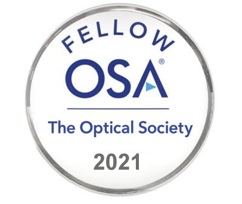
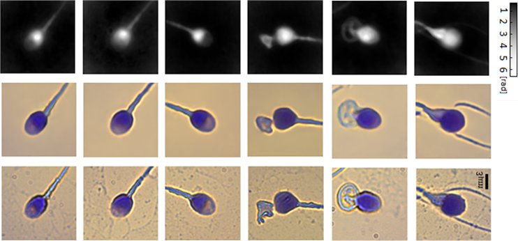
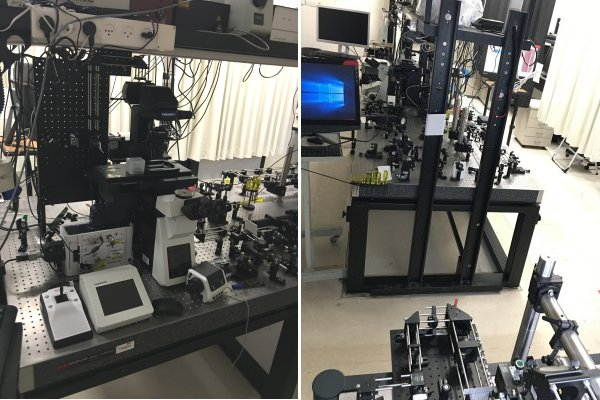
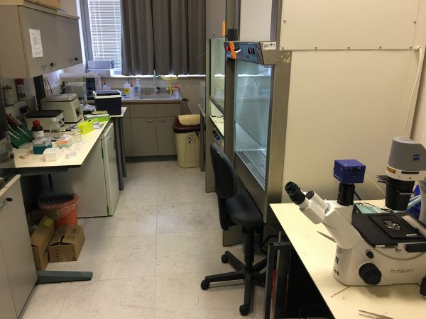
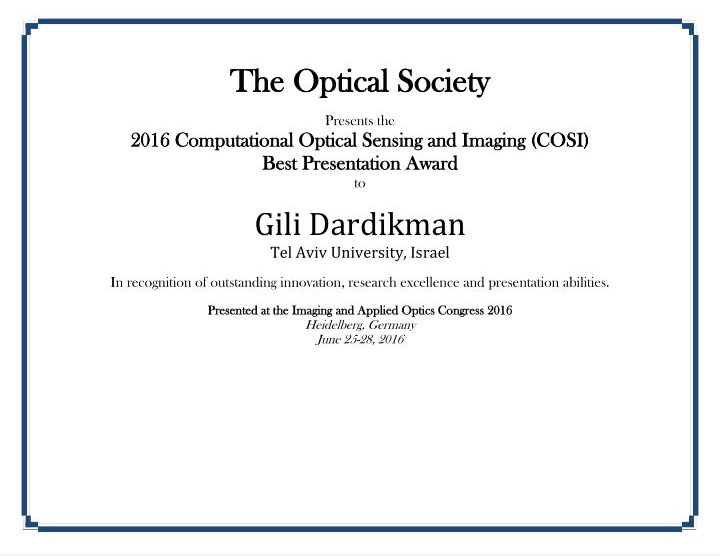
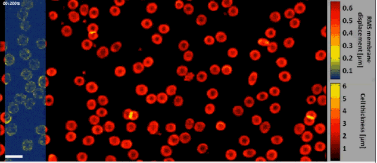
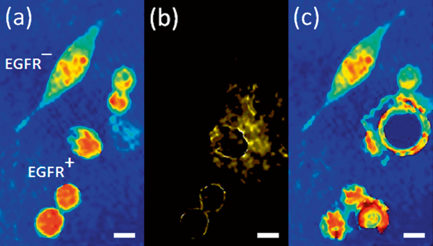
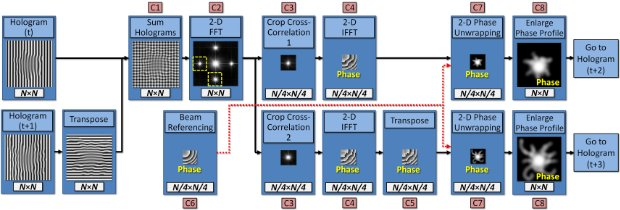
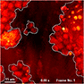
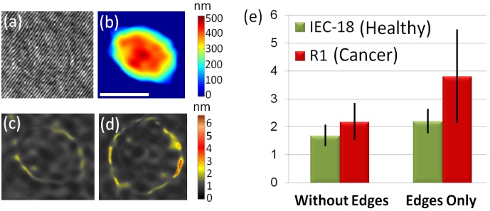

New Chair to Prof. Shaked
Prof. Natan T. Shaked has received the
Chair (Cathedra) of Advanced Biomedical Optical Microscopy
in Tel Aviv University
Plenary Lecture in SPIE PW
Prof. Shaked was honored to give a Plenary Lecture in SPIE Photonics West, San Francisco, CA, USA, on 29 January 2023
Lecture title:
Deep2Deep: AI and deep learning for label-free 3D cell classification
https://spie.org/photonics-west/event/biophotonics-focus-ai-ml-dl-plenary/2656964

SPIE LBIS 2023
Label-free Biomedical Imaging and Sensing (LBIS) 2023
Nature Photonics Paper: In memory of Gabriel Popescu
Gabriel Popescu passed away in June 2022. He will be remembered as a creative leader in biophotonics, with pioneering contributions to quantitative phase imaging and spectroscopy, an engaging collaborator and a dear friend.

Photo: Sharing a desert in Romania in May 2022.
Here is a goodbye paper we wrote to Nature Photonics:
N. T. Shaked, Y. K. Park, S. A. Boppart, A. Wax, and P. T. C. So, “In memory of Gabriel Popescu,” Nature Photonics, Vol 16, pp. 609-610 (2022).
BME Department Chair to Prof. Shaked
Prof. Shaked has been appointed as the Chair of the Department of Biomedical Engineering in Tel Aviv University (containing 15 research groups and ~500 undergraduate & graduate students).
SPIW LBIS 2022
My conference, Label-Free Imaging and Sensing (LBIS) in SPIE Photonics West San Francisco 2022, has been alive and ongoing, despite the challenging times of COVID.
Hope to see you all next year in SPIE LBIS 2023!
Recent AI papers
AI for Virtual Staining of Biological Cells
- Y. N. Nygate, M. Levi, S. K. Mirsky, N. A. Turko, M. Rubin, I. Barnea, G. Dardikman-Yoffe, M. Haifler, A. Shalev, and N. T. Shaked, “Holographic virtual staining of individual biological cells,” Proceedings of the National Academy of Sciences USA (PNAS) [IF 11.205], Vol. 117, No. 17, pp. 9223-9231, 2020 [PDF] [Link].
- K. Ben-Yehuda, S. K. Mirsky, M. Levi, I. Barnea, I. Meshulach, S. Kontente, D. Benvaish, R. Cur-Cycowicz, Y. N. Nygate, and N. T. Shaked, “Simultaneous morphology, motility and fragmentation analysis of live individual sperm cells for male fertility evaluation,” Accepted to Advanced Intelligent Systems, 2021 [PDF, Video 1, Video 2] [Link].
AI for Automatic Classification of Biological Cells
- M. Rubin, O. Stein, N. A. Turko, Y. Nygate, D. Roitshtain, L. Karako, I. Barnea, R. Giryes, and N. T. Shaked, “TOP-GAN: Stain-free cancer cell classification using deep learning with a small training set,” Medical Image Analysis [IF 8.545], Vol. 57, pp. 176-185, 2019 [Link].
- S. Ben Baruch, N. Rotman-Nativ, A. Baram, H. Greenspan, and N. T. Shaked, “Cancer-cell deep-learning classification by integrating quantitative-phase spatial and temporal fluctuations,” Cells [IF 6.6], Vol. 10, No. 12, 3353 2021 [PDF] [Link].
- N. Rotman-Nativ and N. T. Shaked, “Live cancer cell classification based on quantitative phase spatial fluctuations and deep learning with a small training set,” Frontiers in Physics, Vol. 9, 754897, 2021 [PDF] [Link].
- N. Nissim, M. Dudaie, I. Barnea, and N. T. Shaked, “Real-time stain-free classification of cancer cells and blood cells using interferometric phase microscopy and machine learning,” Cytometry A, Vol. 99, Issue 5, pp. 511-523, 2021 [Link].
- S. K. Mirsky, I. Barnea, M. Levi, H. Greenspan, and N. T. Shaked, “Automated analysis of individual sperm cells using stain-free interferometric phase microscopy and machine learning,” Cytometry Part A, Vol. 91, Issue 9, pp. 893-900, 2017 [Link].
- D. Roitshtain, L. Wolbromsky, E. Bal, H. Greenspan, L. Satterwhite, and N. T. Shaked, “Quantitative phase microscopy spatial signatures of cancer cells,” Cytometry Part A, Vol. 91, Issue 5, pp. 482-493, 2017 [Link].
AI for Rapid Processing of Quantitative Phase Images of Biological Cells
- G. Dardikman-Yoffe, D. Roitshtain, S. K. Mirsky, N. A. Turko, M. Habaza, and N. T. Shaked, “PhUn-Net: ready-to-use neural network for unwrapping quantitative phase images of biological cells,” Biomedical Optics Express, Vol. 11, No. 2, pp. 1107-1121, 2020 [Link].
[People] [Research] [Publications: Journals, Conferences, Books, Reviews, Patents, Seminars, Press] [Facilities: Nano Center Lab, Multidisciplinary Center Lab] [Collaborations] [Open Positions] [Courses: Electromagnetics, Coherent Imaging , Optics and Lasers, Optical Microscopy, Interferometric Imaging, Interferometric Microscopy (Online), BME Lab] [Internal: Calendar, Photos] [Contact]
OSA Fellow to Prof. Shaked
Prof. Natan T. Shaked has been nominated to a Fellow in the The Optical Society of America (OSA)
“For significant contributions in biomedical holography, developing clinical portable holographic modules, and for novel holographic multiplexing and machine-learning approaches.”

[Link]
New paper in PNAS
Holographic virtual staining of individual biological cells
via Deep Learning
Y. N. Nygate, M. Levi, S. Mirsky, N. A. Turko, M. Rubin, I. Barnea, M. Haifler, A. Shalev,
and N. T. Shaked
Proceedings of the National Academy of Sciences of the U.S.A. (PNAS),
Vol. 117, No. 17, pp. 9223-9231, 2020
Abstract: Many medical and biological protocols for analyzing individual biological cells involve morphological evaluation based on cell staining, designed to enhance imaging contrast and enable clinicians and biologists to differentiate between various cell organelles. However, cell staining is not always allowed in certain medical procedures. In other cases, staining may be time consuming or expensive to implement. Here, we present a new deep-learning approach, called HoloStain, which converts images of isolated biological cells acquired without staining by holographic microscopy to their virtually stained images. We demonstrate this approach for human sperm cells, as there is a well-established protocol and global standardization for characterizing the morphology of stained human sperm cells for fertility evaluation, but, on the other hand, staining might be cytotoxic and thus is not allowed during human in vitro fertilization (IVF). We use deep convolutional Generative Adversarial Networks (DCGANs) with training that is based on both the quantitative phase images and two gradient phase images, all extracted from the digital holograms of the stain-free cells, with the ground truth of bright-field images of the same cells that subsequently underwent chemical staining. To validate the quality of our virtual staining approach, an experienced embryologist analyzed the unstained cells, the virtually stained cells, and the chemically stained sperm cells several times in a blinded and randomized manner. We obtained a 5-fold recall (sensitivity) improvement in the analysis results. With the introduction of simple holographic imaging methods in clinical settings, the proposed method has a great potential to become a common practice in human IVF procedures, as well as to significantly simplify and facilitate other cell analyses and techniques such as imaging flow cytometry.

Virtual staining of individual sperm cells using single-projection interferometry. We used the label-free free quantitative phase profiles of the cells as inputs to a neural network that performed the mapping, after being trained with the coinciding chemical staining images. The first row shows the quantitative phase images extracted from the single holograms. The second row shows the coinciding virtual stained images, generated by the network. The third row shows the coinciding bright-field chemically stained images of the same sperm cells that the network did not see; yet it can present the cells as if they were stained, as shown in the second row, based only on the label-free quantitative phase images shown in the first row. The first three columns show normal morphology cells, and the last three columns show pathological cells.
New paper in Science Advances
High-resolution 4D acquisition of freely swimming human sperm cells without staining
Gili Dardikman-Yoffe, Simcha K. Mirsky, Itay Barnea, and Natan T. Shaked
Abstract: We present a new acquisition method that enables high-resolution, fine-detail full reconstruction of the three-dimensional movement and structure of individual human sperm cells swimming freely. We achieve both retrieval of the three-dimensional refractive-index profile of the sperm head, revealing its fine internal organelles and time-varying orientation, and the detailed four-dimensional localization of the thin, highly-dynamic flagellum of the sperm cell. Live human sperm cells were acquired during free swim using a high-speed off-axis holographic system that does not require any moving elements or cell staining. The reconstruction is based solely on the natural movement of the sperm cell and a novel set of algorithms, enabling the detailed four-dimensional recovery. Using this refractive-index imaging approach, we believe we have detected an area in the cell that is attributed to the centriole. This method has great potential for both biological assays and clinical use of intact sperm cells.
Science Advances, Vol. 6, No. 15, eaay7619, 2020 [Link]
Download: [PDF, Supp Mat, Video 1, Video 2, Video 3, Video 4, Video 5]
 …………………………………………………………………………………………………………………………………….
…………………………………………………………………………………………………………………………………….
Rapid label-free refractive-index tomography of a sperm cell during free swim.
Congrats to Maysam Nasser
Congrats to Maysam Nasser for winning the prestigious Neuberger Foundation Fellowship for excellent PhD Arab Students!

Full Professor to Prof. Shaked
Prof. Shaked has been promoted to a Full Professor Rank.
Congrats to Gili Dardikman
Congrats to Gili Dardikman for winning the prestigious Clore Foundation Fellowship for excellent PhD students!
 |
Gili Dardikman is a full-time, direct-track PhD student in the Department of Biomedical Engineering at Tel Aviv University. Her BSc specialization included signals and systems in biomedical engineering. In October 2014, she started her thesis in the OMNI group focusing on machine learning , and rapid CUDA processing of holograms. |
LBIS: New annual SPIE conference
Label-free Biomedical Imaging and Sensing (LBIS)
SPIE Photonics West, San Francisco, CA, USA
LBIS 2021: https://spie.org/PWB/conferencedetails/label-free-biomedical-imaging-and-sensing
LBIS 2020: https://spie.org/PWB/conferencedetails/label-free-biomedical-imaging-and-sensing
LBIS 2019: https://spie.org/PWB/conferencedetails/label-free-biomedical-imaging-and-sensing
Conference Chairs:
Natan T. Shaked, Tel Aviv Univ. (Israel)
Oliver Hayden, Technische Univ. München (Germany)
Program Committee:
Valery V. Tuchin, Saratov National Research State Univ. (Russian Federation)
Jürgen Popp, Friedrich-Schiller-Univ. Jena (Germany)
Aydogan Ozcan, Univ. of California Los Angeles (United States)
Shi-Wei Chu, National Taiwan Univ. (Taiwan)
Adam de la Zerda, Stanford Univ. School of Medicine (United States)
Pietro Ferraro, Istituto di Scienze applicata e Sistemi Intelligenti (Italy)
Jochen R. Guck, TU Dresden (Germany)
Ori Katz, The Hebrew Univ. of Jerusalem (Israel)
Alexander T. Khmaladze, Univ. at Albany (United States)
Francisco E. Robles, Georgia Institute of Technology (United States)
Melissa C. Skala, Univ. of Wisconsin-Madison (United States)
Yihui Wu, Changchun Institute of Optics, Fine Mechanics and Physics (China)
Bahram Jalali, , Univ. of California Los Angeles (United States)
Pierre Mariqute, Univ. Laval (Canada)
Yizheng Zhu, Virginia Polytechnic Institute and State Univ. (United States)
Label-free biomedical optical imaging and sensing refers to optical measurements performed on biological samples or living organisms without the need for utilizing labeling agents. Label-free imaging of cells in vitro is specifically of interest, since isolated cells are optically transparent and regular bright-field imaging does not present enough imaging contrast. Labeling agents, such as fluorescent dyes or labels using antibodies, can create molecular specificity and enhance contrast but they might interfere with the biological phenomena measured, and thus are not always allowed. In addition, some biological targets do not have suitable labeling agents. In vivo imaging of living organisms, and humans in particular, should be preferably performed without using labeling agents, due to possible hazardous effects induced by these agents.
Optical detection methods for label-free imaging and sensing are typically based on internal contrast mechanisms of the sample; for example, its ability to delay the light interacting with the sample due to refractive index changes, or its ability to create unique optical spectroscopic, auto-fluorescence, and birefringence or acoustic signatures. In addition, the substrate holding the sample during measurement can be used to enhance the detection and monitor of the sample properties via various effects, including Plasmon resonance, total internal reflection, etc. Furthermore, life science tools, such as optogenetics or gene expression methods, can be applied to achieve molecular specificity in living objects.
Label-free imaging and sensing in the nanoscale, including tracking of single molecules, is of high interest as well. Specifically, label-free optical nanoscopy is still considered as an unsolved challenge in this field.
This conference will gather scientists from various disciplines, who are interested in optical imaging and sensing of biological substances without using labeling: physicists and engineers on the one hand, chemists and life scientists performing optical label-free sensing on the other hand.
Relevant topics include, but are not limited to:
- Phase imaging (Zernike’s, differential interference contrast (DIC), holography, optical diffraction tomography (ODT), etc.)
- Coherent Raman spectroscopy techniques (CARS, SRS, etc.)
- Spontaneous Raman imaging
- Interferometric and coherence gated imaging (optical coherence tomography, etc.)
- Polarization and birefringence imaging
- Dark-field microscopy
- Brillouin microscopy (spontaneous and stimulated)
- High harmonic generation and nonlinear imaging and sensing
- Auto-fluorescence imaging and sensing
- Hyperspectral imaging and sensing
- Total internal reflection imaging and sensing
- Acoustic and photoacoustic imaging
- Plasmonic sensors
- Fiber-optics-based label-free bio-detectors
- Label-free imaging in the nano-scale
- On-chip implementations of label-free sensors
- Preclinical, clinical, and life science applications
- Label-free imaging using optogenetic and gene expression tools.
We just founded a third experimental lab
The new OMNI lab in the Multidisciplinary Center is located at room 102B (in addition to the two older labs, room 006 in the Multidisciplinary Center and room 024 in the Nano Center).
.
The new lab contains:
- Two large optical tables and two small ones
- Olympus IX83 fully automatic modular microscope with confocal spinning disk module and an imaging incubator
- NKT high-power supercontinuum white-light source with three acousto-optical tunable filters (low coherence source for UV, visible, and IR)
- Many small lasers (HeNe lasers, DPSS lasers, superluminescent diodes, etc.)
- Small optical and opto-mechanical components

…………………………………………………………………………………………………………………………………………
Fully equipped biological/chemical lab for sample preparation, including:
- Chemical and biological hoods
- Incubator
- Routine-use microscopes
- High-speed centrifuge
- Oven
- Freezer

OSA’s COSI Best Presentation Award
Congrats to Gili Dardikman, OMNI’s PhD student, for winning the best presentation award of the OSA’s COSI conference in Germany!

New paper in Advanced Science
New paper in Advanced Science, 2016:
Rapid three-dimensional refractive-index imaging of live cells in suspension without labeling using dielectrophoretic cell rotation
Mor Habaza, Michael Kirschbaum, Christian Guernth-Marschner, Gili Dardikman, Itay Barnea, Rafi Korenstein, Claus Duschl, and Natan T. Shaked
Abstract:
A major challenge in the field of optical imaging of live cells is achieving rapid, three-dimensional (3-D) and noninvasive imaging of isolated cells without labeling. If successful, many clinical procedures involving analysis and sorting of cells drawn from body fluids, including blood, can be significantly improved. We present a new label-free tomographic interferometry approach that provides rapid capturing of the 3-D refractive index distribution of single cells in suspension. The cells flow in a microfluidic channel, are trapped and rapidly rotated by dielectrophoretic forces in a noninvasive and precise manner. Interferometric projections of the rotated cell are acquired and processed into the cellular 3-D refractive index map. Uniquely, this approach provides full (360o) coverage of the rotation angular range on any axis, and knowledge on the viewing angle. Our experimental demonstrations include 3-D, label-free imaging of both large cancer cells and three-types of white blood cells. This approach is expected to be useful for label-free cell sorting, as well as for detection and monitoring of pathological conditions resulting in cellular morphology changes or occurrence of contain cellular types in blood or other body fluids.

(a,b) Refractive-index maps of an MCF-7 cell at the mid-sagittal slice for using a full cell rotation on a single axis (a) and on two axes (b). The arrow indicate details that are clearer when rotating the cell on two axes. (c,d) 3-D renderings (c) and rendered iso-surface plot (d) of the refractive-index map of the reconstructed refractive index map of an MCF-7 cancer cell. (e-j) Refractive index maps of three types of white blood cells at the mid-axial positions (e-g), and the coinciding rendered iso-surface plots of the refractive-index maps (h-j); (e,h) T cell, see also Supplementary Video 4; (f,i) Monocyte, see also Supplementary Video 5; (g,j) Neutrophil, see also Supplementary Video 6.
New paper accepted to Optics Express
New paper accepted to Optics Express
New paper in Optics Express, 2016:
Video-rate processing in tomographic phase microscopy of biological cells using CUDA
Gili Dardikman, Mor Habaza, Laura Waller, and Natan T. Shaked
Abstract:
We suggest a new implementation for rapid reconstruction of three-dimensional (3-D) refractive index (RI) maps of biological cells acquired by tomographic phase microscopy (TPM). The TPM computational reconstruction process is extremely time consuming, making the analysis of large data sets unreasonably slow and the real-time 3-D visualization of the results impossible. Our implementation uses new phase extraction, phase unwrapping and Fourier slice algorithms, suitable for efficient CPU or GPU implementations. The experimental setup includes an external off-axis interferometric module connected to an inverted microscope illuminated coherently. We used single cell rotation by micro-manipulation to obtain interferometric projections from 73 viewing angles over a 180° angular range. Our parallel algorithms were implemented using Nvidia’s CUDA C platform, running on Nvidia’s Tesla K20c GPU. This implementation yields, for the first time to our knowledge, a 3-D reconstruction rate higher than video rate of 25 frames per second for 256 × 256-pixel interferograms with 73 different projection angles (64 × 64 × 64 output). This allows us to calculate additional cellular parameters, while still processing faster than video rate. This technique is expected to find uses for real-time 3-D cell visualization and processing, while yielding fast feedback for medical diagnosis and cell sorting.

Average reconstruction rates (fps) and speedups when comparing the CPU and GPU efficient implementations, for various input hologram sizes (a) Rates including reading and writing to/from the CPU and memory transfers to/from the GPU when relevant; (b) Rates not including reading and writing to/from the CPU. © 2016 OSA
1.9 M Euro award from the ERC
Nov. 2015
Grant title:
OptiQ-CanDo: Hybrid Optical Interferometry for Quantitative Cancer Cell Diagnosis
.
.


Pinhas and Irena got married. Congrats
First internal marriage in our group:
Pinhas and Irena got married.
Congrats!!
.

New paper accepted to Fertility and Sterility
New paper in Fertility and Sterility, 2015:
Interferometric phase microscopy for label-free morphological evaluation of sperm cells
Miki Haifler, Pinhas Girshovitz, Gili Band, Gili Dardikman, Igal Madjar, and Natan T. Shaked
Abstract:
Objective: To compare label-free interferometric phase microscopy (IPM) to label-free and label-based bright-field microscopy (BFM) in evaluating sperm cell morphology. This comparison helps in evaluating the potential of IPM for clinical sperm analysis without staining.
Design: Comparison of imaging modalities.
Setting: University laboratory.
Patient(s): Sperm samples were obtained from healthy sperm donors. Intervention(s): We evaluated 350 sperm cells, using portable IPM and BFM, according to World Health Organization (WHO) criteria. The parameters evaluated were length and width of the sperm head and midpiece; size and width of the acrosome; head, midpiece, and tail configuration; and general normality of the cell.
Main Outcome Measure(s): Continuous variables were compared using the Student’s t test. Categorical variables were compared with the X^2 test of independence. Sensitivity and specificity of IPM and label-free BFM were calculated and compared with label-based BFM.
Result(s): No statistical differences were found between IPM and label-based BFM in the WHO criteria. In contrast, IPM measurements of head and midpiece width and acrosome area were different from those with label-free BFM. Sensitivity and specificity of IPM were higher than those with label-free BFM for the WHO criteria.
Conclusion(s): Label-free IPM can identify sperm cell abnormalities, with an excellent correlation with label-based BFM, and with higher accuracy compared with label-free BFM. Further prospective clinical trials are required to enable IPM as part of clinical sperm selection procedures.
[Link]

(a) An interferogram obtained using IPM. The sample is still barely seen. However, the OPD information is encoded into the bend of the interference fringes, as can be seen from the enlarged region of interest in (b). (c) The OPD map of the same sperm cell, as digitally calculated from the interferogram shown in (a). All the main morphological features of the cell are discernable. (c, e) Imaging of a sperm cell with an acrosomal vacuole, using: (d) label-based BFM, and (e) label-free IPM. The vacuole is clearly seen as a defect in the OPD map of the IPM image. BFM = bright-field microscopy; IPM = interferometric phase microscopy; OPD = optical path delay. Elsevier 2015(c).
New paper accepted to Optics Letters
New paper in Optics Letters, Vol. 40, Issue 10, pp. 2273-2276, 2015:
Off-axis interferometer with adjustable fringe contrast based on polarization encoding
Sharon Karepov, Natan T. Shaked, and Tal Ellenbogen
Abstract: We propose a compact, close-to-common-path, off-axis interferometric system for low polarizing samples based on a spatial polarization encoder that is placed at the Fourier plane of a conventional transmission microscope. The polarization encoder erases the sample information from one polarization state and maintains it on the orthogonal polarization state, while retaining the low spatial frequencies of the sample, and thus enabling quantitative phase acquisition. In addition, the interference fringe visibility can be controlled by polarization manipulations. We demonstrate this concept experimentally by quantitative phase imaging of a USAF 1951 phase test target and human red blood cells with optimal fringe visibility and single-exposure phase reconstruction.

Imaging of USAF 1951 phase test target using the polarization encoding interferometer. (a) Intensity image with co-polarized analyzer (at 90°), associated with the sample arm, and (b) with cross-polarized analyzer (at 0°), associated with the reference arm. (c) The off-axis interference obtained on a small area of the background. (d) The reconstructed quantitative phase map. Scale bars are 26.7 μm in (a), (b) and (d), and 6.8 μm in (c).
New paper accepted to Nature LSA
New paper accepted to Nature – Light Science & Applications (Nature LSA), 2015:
Omry Blum and Natan T. Shaked
Abstract: We present a new approach for predicting spatial phase signals originated from photothermally excited metallic nanoparticles of arbitrary shapes and sizes. Heat emitted from the nanoparticle affects the measured phase signal via both the nanoparticle surrounding refractive index and thickness changes. Since these particles can be bio-functionalized to bind certain biological cell components, they can be used for biomedical imaging with molecular specificity, as new nanoscopy labels, and for photothermal therapy. Predicting the ideal nanoparticle parameters requires a model that computes the thermal and phase distributions around the particle, enabling more efficient phase imaging of plasmonic nanoparticles, and sparing trial and error experiments of using unsuitable nanoparticles. For the first time to our knowledge, using the proposed model, one can predict phase signatures from nanoparticles with arbitrary parameters. The proposed nonlinear model is based on a finite-volume method for geometry discretization, and an implicit backward Euler method for solving the transient inhomogeneous heat equation. To validate the model, we correlate its results with experimental results obtained for gold nanorods of various concentrations, which we acquired by a custom-built wide-field interferometric phase microscopy system.
[Link] [PDF, Video 1, Video 2, Video 3, Video 4, Video 5, Video 6, Video 7]
.

Demonstration of using the proposed model for simulating the thermal and phase distributions of a structure of four gold nanoparticles. Top: optical excitation profile. Bottom left: heat distribution. Bottom right: optical path delay distribution.
New paper accepted to Optics Letters
New paper in Optics Letters, Vol. 40, Issue 8, pp. 1881-1884 (2015):
Tomographic phase microscopy with 180° rotation of live cells in suspension by holographic optical tweezers
Mor Habaza, Barak Gilboa, Yael Roichman, and Natan T. Shaked
Abstract: We present a new tomographic phase microscopy (TPM) approach that allows capturing the three-dimensional refractive-index structure of single cells in suspension without labeling using 180° rotation of the cells. This is obtained by integrating an external off-axis interferometer for wide-field wave front acquisition with holographic optical tweezers (HOTs) for trapping and micro-rotation of the suspended cells. In contrast to existing TPM approaches for cell imaging, our approach does not require anchoring the sample to a rotating stage nor is it limited in angular range as is the illumination rotation approach, and thus it allows TPM of suspended live cells in a wide angular range. The proposed technique is experimentally demonstrated by capturing the three-dimensional refractive-index map of yeast cells while collecting interferometric projections at an angular range of 180° with 5° steps. The interferometric projections are processed by both the filtered back-projection method and the diffraction-theory method. The experimental system is integrated with spinning-disk confocal fluorescent microscope for validation of the label-free TPM results.
[PDF, Media 1, Media 2, Media 3, Media 4] [Link]

3-D refractive index map of yeast cells obtained by the proposed TPM-HOTs technique.
New paper accepted to Optics Express
New paper accepted to Optics Express, 2015:
Fast phase processing in off-axis holography using multiplexing with complex encoding and live-cell fluctuation map calculation in real-time
Pinhas Girshovitz and Natan T. Shaked
Abstract: We present efficient algorithms for rapid reconstruction of quantitative phase maps from off-axis digital holograms. The new algorithms are aimed at speeding up the conventional Fourier-based algorithm. By implementing the new algorithms on a standard personal computer, while using only a single-core processing unit, we were able to reconstruct the unwrapped phase maps from one megapixel off-axis holograms at frame rates of up to 45 frames per second (fps). When phase unwrapping is not required, the same algorithms allow frame rates of up to 150 fps for one megapixel off-axis holograms. In addition to obtaining realtime quantitative visualization of the sample, the increased frame rate allows integrating additional calculations as a part of the reconstruction process, providing sample-related information that was not available in real time until now. We use these new capabilities to extract, for the first time to our knowledge, the dynamic fluctuation maps of red blood cells at frame rate of 31 fps for one megapixel holograms.
[PDF, Media 1, Media 2] [Link]

Fast off-axis holographic processing of the dynamic quantitative physical thickness maps of red blood cells. The initial hologram contained 1024×2048 pixels. At the same time of the phase map calculation, we have calculated the dynamic membrane fluctuation map in a window of 1024×256 pixels, shifted across the field of view, as obtained by a FIFO stack of 24 points in time per each pixel. All calculations were performed on a single-core processing unit of a conventional personal computer. White scale bar represents 10 µm upon the sample.
New paper accepted to the Journal of Biophotonics
New paper accepted to the Journal of Biophotonics, 2015
Detection and controlled depletion of cancer cells using photothermal phase microscopy
Nir A. Turko, Itay Barnea, Omry Blum, Rafi Korenstein, and Natan T. Shaked
Abstract: We present a dual-modality technique based on wide-field photothermal (PT) interferometric phase imaging and simultaneous PT ablation to selectively deplete specific cell populations labelled by plasmonic nanoparticles. This combined technique utilizes the plasmonic reaction of gold nanoparticles under optical excitation to produce PT imaging contrast by inducing local phase changes when the excitation power is weak, or ablation of selected cells when increasing the excitation power. Controlling the entire process is carried out by dynamic quantitative phase imaging of all cells (labelled and unlabelled). We demonstrate our ability to detect and specifically ablate in vitro cancer cells over-expressing epidermal growth factor receptors (EGFRs), labelled with plasmonic nanoparticles, in the presence of either EGFR under-expressing cancer cells or white blood cells. The latter demonstration establishes an initial model for depletion of circulating tumour cells in blood. The proposed system is able to image in wide field the label-free quantitative phase profile together with the PT phase profile of the sample, and provides the ability of both detection and selective cell ablation in a controlled environment.
[Link]

Quantitative phase imaging with molecular specificity and specific cell depletion. (a) Label-free quantitative phase profiles of mixed population of EGFR+/EGFR– cancer cells. (b) When weak modulated PT excitation is applied, selective phase contrast is generated in the modulation frequency only for the EGFR+ cancer cells labelled with plasmonic nanoparticles. (c) When stronger modulated PT excitation is applied, selective ablation of the EGFR+ cancer cells labelled with plasmonic nanoparticles occurs. White scalebars represent 10 µm upon sample. Figure is modified from DOI: 10.1002/jbio.201400095.
New paper accepted to Optics Letters
New paper in Optics Letters, Vol. 39, No. 8, 2262-2265, 2014:
Pinhas Girshovitz and Natan T. Shaked
Abstract: We present a new approach for obtaining significant speedup in the digital processing of extracting unwrapped phase profiles from off-axis digital holograms. The new technique digitally multiplexes two orthogonal off-axis holograms, where the digital reconstruction, including spatial filtering and two-dimensional phase unwrapping on decreased number of pixels, can be performed on both holograms together, without redundant operations. Using this technique, we were able to reconstruct, for the first time to our knowledge, off-axis holograms with 1 megapixel in more than 30 frames per second using a standard single-core personal computer on a Matlab platform, without using a graphic processing-unit programming or parallel computing. This new technique is important for real-time quantitative visualization and measurements of highly dynamic samples, and is applicable for a wide range of applications, including rapid biological cell imaging and real-time nondestructive testing. After comparing the speedups obtained by the new technique for holograms of various sizes, we present experimental results of real-time quantitative phase visualization of cells flowing rapidly through a micro-channel.

Hologram-multiplexing algorithm for fast calculation of phase profiles from off-axis holograms.
|
Quantitative imaging of fast flow of blood cells through a micro-channel, processed in video-rate using the new hologram-multiplexing algorithm. Selected for image of the week of the Optical Society of America, April 14, 2014. |
 |
Three Excellent Student Awards for the group members
Congratulations to Omry for winning the Rector Award of Excellence (first place), to Mor for winning the Dean Award of Excellence, and to Noa for winning the Dean Award of Excellence!
New paper in Optics Letters, Vol. 39, No. 6, 1525-1528, 2014:
Off-axis interferometric phase microscopy with tripled imaging area
Irena Frenklach, Pinhas Girshovitz, and Natan T. Shaked
Abstract: We present a novel interferometric approach, referred as interferometry with tripled-imaging area (ITIA), for tripling the quantitative information that can be collected in a single camera exposure, while using off-axis interferometric imaging. This The ITIA technique enables optical multiplexing of three off-axis interferograms onto a single camera sensor, without changing the imaging-system characteristics, such as magnification and spatial resolution, or losing temporal resolution (no scanning is involved). This approach is useful for many applications in which interferometric and holographic imaging are used. Our experimental demonstrations include quantitative phase microscopy of a USAF 1951 test target, thin diatom shells and live human cancer cells.

ITIA for quantitative phase imaging of HeLa cells. In muted colors – the scanned field of view (FOV), which is larger than the camera FOV. Three quantitative phase images reconstructed from a single multiplexed interferogram acquired simultaneously, without any scanning. Scale bar indicates 50 μm.
New paper in Nature LSA
Doubling the field of view in off-axis low-coherence interferometric imaging
Pinhas Girshovitz and Natan T. Shaked
.
Abstract: We present a new interferometric and holographic approach, named interferometry with doubled imaging area (IDIA), with which it is possible to double the camera field of view while performing off-axis interferometric imaging, without changing the imaging parameters, such as the magnification and the resolution. This technique enables quantitative amplitude and phase imaging of wider samples without reducing the acquisition frame rate due to scanning. The method is implemented using a compact interferometric module that connects to a regular digital camera, and is useful in a wide range of applications in which neither the field of view nor the camera frame rate can be compromised. Specifically, the IDIA principle allows doubling the off-axis interferometric field of view, which might be narrower than the camera field of view due to low-coherence illumination. We demonstrate the proposed technique for scan-free quantitative optical thickness imaging of microscopic biological samples, including live neurons, and rapid human sperm cell in motion under large magnification. In addition, we used the IDIA principle to perform non-destructive profilometry during a rapid lithography process of transparent structures.

Quantitative optical thickness maps of a human spermatozoon swimming, as recorded by IDIA under low coherence illumination, enabling the acquisition of the fast dynamics of the spermatozoon with fine details on a doubled field of view. The white dashed line indicates the location of the stitching between the two fields of view. The color bar represents the quantitative optical thickness.
New paper accepted to Journal of Biomedical Optics
.
N. A. Turko, A. Peled, and N. T. Shaked, “Wide-field interferometric phase microscopy with molecular specificity using plasmonic nanoparticles,” Journal of Biomedical Optics, Vol. 18, No. 11, 111414:1-8, 2013.
.
Abstract: We present a method for adding molecular specificity to wide-field interferometric phase microscopy (IPM) by recording the phase signatures of gold nanoparticles (AuNPs) labeling targets of interest in live cells. The AuNPs are excited by light at a wavelength corresponding to their absorption spectral peak, evoking a photothermal (PT) effect due to their plasmonic resonance. This effect induces a local temperature rise, resulting in local refractive index and phase changes that can be detected optically. Using a wide-field interferometric phase microscope, we acquired an image sequence of the AuNPs sample phase profile without requiring lateral scanning, and analyzed the time-dependent profile of the entire field of view using a Fourier analysis, creating a map of the locations of AuNPs in the sample. The system can image a wide-field PT phase signal from a cluster containing down to 16 isolated AuNPs. AuNPs were then conjugated to epidermal growth factor receptor (EGFR) antibodies and inserted to an EGFR-overexpressing cancer cell culture, which was imaged using IPM, and verified by confocal microscopy. To the best of our knowledge, this is the first time wide-field interferometric PT imaging is performed at the subcellular level without the need for a total-internal-reflection effects or scanning.
.
 Imaging of MDA-MB 468 (EGFR+) cancer cell with conjugated AuNPs:
Imaging of MDA-MB 468 (EGFR+) cancer cell with conjugated AuNPs:
(a) Confocal imaging: Six consecutive confocal images of the AuNPs in the cell, from top-left image, representing the bottom of the cell, to bottom-right image, representing the top of the cell, in axial steps of 0.5 µm apart.
(b) Confocal plus DIC imaging: Cumulative confocal image of the AuNPs (colored), as obtained by summing the six consecutive confocal images shown in (a), overlaying a DIC image of the same cel (grayscale).
(c) PT IPM plus regular IPM imaging: PT phase image of the AuNPs (colored), overlaying a wide-field IPM phase image of the same cell (grayscale).
Figure is modified from Journal of Biomedical Optics [PDF].
New paper accepted to Optics Letters
Haniel Gabai, Maya Baranes-Zeevi, Meital Zilberman and Natan T. Shaked
Abstract: We obtained continuous, noncontact wide-field imaging and characterization of drug release from a polymeric device invitro by uniquely using off-axis interferometric imaging. Unlike the current gold-standard methods in this field, which are usually based on chromatography and spectroscopy, our method requires no user intervention during the experiment, and involves less lab consumable instruments. Using a simplified interferometric imaging system, we experimentally demonstrate the characterization of anesthetic drug release (Bupivacaine) from a soy-based protein matrix, used as skin substitute for wound dressing. Our results demonstrate the potential of interferometric imaging as an inexpensive and easy-to-use alternative for characterization of drug release in-vitro.
.

Left - Quantitative phase profile resulted from drug release during 12 hours as measured by continuous wide-field interferometric imaging. The right lower frame illustrates the DDD location relatively to the FOV.
Right - Cumulative drug release profiles obtained from HPLC (solid line), off-axis interferometry (dotted line) and Weibull model (crossed line) for drug release period of 12 hours.
Figure is modified from Optic Letters [PDF].
Congratulations to the new graduates
Congratulations to Itay Shock for receiving his MSc yesterday, to Pini for his BSc with Distinction, and to Irena for her BSc.
Excellent Graduate-Student Awards
Congrats to Pini and Haniel for winning the Excellent Graduate-Student Award (and 4000 NIS).
Two prizes in the same lab is a good thing for all of us.
Four new oral presentations in OSA/SPIE conferences in Munich, Germany, May 16, 2013
- I. Frenklach, P. Girshovitz and N. T. Shaked,
”Quantitative cell nucleus analysis obtained by integrating simultaneous interferometric phase and fluorescence microscopy,”
OSA European Conferences on Biomedical Optics (ECBO)
Munich, Germany
May 16, 2013
. - P. Girshovitz and N. T. Shaked,
”Compact interferometric module for quantitative phase microscopy of biological cells,”
OSA European Conferences on Biomedical Optics (ECBO)
Munich, Germany
May 16, 2013
. - N. T. Shaked, Y. Bishitz, H. Gabai, and P. Girshovitz,
“Optical-mechanical properties of diseased cells measured by interferometry,”
SPIE Optical Metrology 2013
Conference 8792: Optical Methods for Inspection, Characterization, and Imaging of Biomaterials
Munich, Germany
May 16, 2013
. - H. Gabai, M. Baranes-Zeevi, M. Zilberman, and N. T. Shaked,
“Noninvasive continuous imaging of drug release from soy-based skin equivalent using wide-field interferometry,”
SPIE Optical Metrology 2013
Conference 8792: Optical Methods for Inspection, Characterization, and Imaging of Biomaterials
Munich, Germany
May 16, 2013
New paper accepted to Journal of Biophotonics
Yael Bishitz, Haniel Gabai, Pinhas Girshovitz, and Natan T. Shaked
Abstract: We propose to establish a cancer biomarker based on the unique optical-mechanical signatures of cancer cells measured in a noncontact, label-free manner by optical interferometry. Using wide-field interferometric phase microscopy (IPM), implemented by a portable, off-axis, common-path and low-coherence interferometric module, we quantitatively measured the time-dependent, nanometer-scale optical thickness fluctuation maps of live cells in vitro . We found that cancer cells fluctuate significantly more than healthy cells, and that metastatic cancer cells fluctuate significantly more than primary cancer cells. Atomic force microscopy (AFM) measurements validated the results. Our study shows the potential of IPM as a simple clinical tool for aiding in diagnosis and monitoring of cancer. 
Wide-field IPM imaging of intestinal epithelial cells: (a) Off-axis interferogram of a healthy cell (IEC-18). (b) Quantitative optical thickness profiles of the healthy cell. (c) Fluctuation STD maps of the healthy cell. (d) Fluctuation STD maps of a cancer cell (R1). White scale-bar represents 10 µm. Colorbars represent optical thickness and optical thickness fluctuation STD in nanometers. (e) Comparison between the maximum fluctuation STD values of healthy cells (IEC-18) and cancer cells (R1) for the inside of the cell (without edges), and for the cell edges only. Cancer cells have been found to fluctuate significantly more than healthy cells. Figure is modified from the Journal of Biophotonics. Wiley 2013(c)
New invited talk in OSA DH 2013, April 24, Hawaii
[Invited]
N. T. Shaked, “Low-coherence, common-path, and dynamic holographic microscopy and nanoscopy for biomedicine using portable systems,” OSA Digital Holography and 3D Imaging, Kohala Coast, Hawaii, USA, April 21-25, 2013.
Two new oral presentations in SPIE Photonics West, February 2013
N. T. Shaked and P. Girshovitz, “Portable low-coherence interferometer for quantitative phase microscopy of live cells,” SPIE Photonics West, Biomedical Optics (BiOS), San Francisco, California USA, February 2-7, 2013.
N. Turko and N. T. Shaked, “Wide-field interferometric phase imaging of plasmonic nanoparticles at the subcellular level,” SPIE Photonics West, Biomedical Optics (BiOS), San Francisco, California USA, February 2-7, 2013.
New paper in Optics Express
Dual-channel low-coherence interferometry and its application to quantitative phase imaging of fingerprints
H. Gabai and N. T. Shaked
Abstract:
We introduce a low-coherence, dual channel and common-path interferometric imaging system for three dimensional imaging of fingerprints for both biomedical and biomertical applications.The proposed system is simple to align, and requires no alignmet in order to obtain interference with low-coherence light source, thus enabling non-expert useres to benifit from the attractive advantages of low-coherence, common-path and dual-channel interferometry. In our case, we have used the dual-channel property in order to create a noise reduced and DC supressed equivalent hologram, from which we were able to derive a high quality, with nano-meter resolution depth profile of fingerprints
 .
.{kind=link}
{kind=link}
The figure shows measurements of thick samples (up to 100 microns) using low-coherence, common-path, wide-field phase interferometry with two-wavelength unwrapping. (a) Two 180°-phase-shifted interferograms of a finger-print template, acquired simultaneously (dual imaging channel). The dashed white square indicates on the scar location. (b) Depth profile distorted by blurring (in blue). Significant distortion can be seen in the upper-right part of the image. (c) Final result with improved contrast obtained by using the two interferograms to decrease noise. (d) Final result in three-dimensional view.
.
[Download PDF] [Journal ink].
New oral presentations in OSA Frontiers in Optics, October 2010
Presented in OSA Frontiers in Optics, Rochester, NY, USA, October 2010:
Cell life cycle characterization based on generalized morphological parameters for interferometric phase microscopy.
P. Girshovitz and N. T. Shaked.
Dual-channel digital holography imaging for fingerprint biometrics.
H. Gabai and N. T. Shaked.
Optical-mechanical signature of cancer cells measured by interferometry.
Y. Bishitz, H. Gabai and N. T. Shaked.
Journal cover page in Biomedical Optics Express
Our paper got the cover page in Biomedical Optics Express:
P. Girshovitz and N. T. Shaked, “Generalized cell morphological parameters based on interferometric phase microscopy and their application to cell life cycle characterization,” Biomedical Optics Express, Vol. 3, No. 8, pp. 1757-1773, 2012 [PDF, Media 1] [Link].

New paper in SPIE Newsroom
Visualizing transparent biology with sub-nanometer accuracy
Natan T. Shaked
Abstract: Interferometric phase microscopy (IPM) measures transparent biological samples quantitatively without labeling or physical contact with the sample. Our group develops new IPM-based methods that enable imaging of biological samples in a label-free, non-contact manner, allowing sub-nanometer optical thickness changes to be tracked quantitatively at a rate of thousands of frames per second with minimal noise. This yields a powerful and unique tool for biological research and medical diagnosis.
New paper in Biomedical Optics Express
Generalized cell morphological parameters based on interferometric phase microscopy and their application to cell life cycle characterization
Pinhas Girshovitz and Natan T. Shaked
Abstract: We present analysis tools which are formulated using wide-field interferometric phase microscopy measurements, and show their ability to uniquely quantify the life cycle of live cancer cells. These parameters are based directly on the optical path delay profile of the sample and do not necessitate decoupling the refractive index and thickness in the cell interferometric phase profile, and thus can be calculated using a singleframe acquisition. To demonstrate the use of these parameters, we have constructed a wide-field interferometric phase microscopy setup and closely traced the full lifecycle of HeLa cancer cells. These initial results show the potential of the parameters to distinguish between the different phases of the cell lifecycle, as well others biological phenomena.
[Download PDF] [Media 1]
New paper in Journal of Biomedical Optics
Optical phase nanoscopy in red blood cells using low-coherence spectroscopy
Itay Shock, Alexander Barbul, Pinhas Girshovitz, Uri Nevo, Rafi Korenstein, and Natan T. Shaked
Abstract: We propose a low-coherence spectral-domain phase microscopy (SDPM) system for accurate quantitative phase measurements in red blood cells (RBCs) for the prognosis and monitoring of disease conditions that affect the visco-elastic properties of RBCs. Using the system, we performed time-recordings of cell membrane fluctuations, and compared the nano-scale fluctuation dynamics of healthy and glutaraldehyde-treated RBCs. Glutaraldehyde-treated RBCs possess a lower amplitude of fluctuations reflecting an increased membrane stiffness. To demonstrate the ability of our system to measure fluctuations of lower amplitudes than those measured by the commonly used holographic phase microscopy techniques, we also constructed a wide-field digital interferometric microscope and compared the performances of the two systems. Due to its common-path geometry, the optical-path-delay stability of SDPM was found to be less than 0.3nm in liquid environment, at least three times better than in holographic phase microscopy under the same conditions. In addition, due to the compactness of SDPM and its inexpensive and robust design, the system possesses a high potential for clinical applications.
New paper in Optics Letters
Quantitative phase microscopy of biological samples using a portable interferometer
Natan T. Shaked
Optics Letters Vol. 37, No. 11, 2016-2019, 2012
Abstract: The Letter presents the τ interferometer, a portable and inexpensive device for obtaining spatial interferograms of microscopic biological samples, without the strict stability and the highly-coherent illumination that are usually required for interferometric microscopy setups. The device is built using off-the-shelf optical elements and can easily operate with low-coherence illumination, whil being positioned in the output of a conventional inverted microscope. The interferograms are processed into the quantitative amplitude and phase profiles of the sample. Based on the phase profile, the optical path delay profile is obtained with temporal stability of 0.18 nm and spatial stability of 0.42 nm. Further experimental demonstration of using the τ interferometer for imaging the quantitative thickness profile of live red blood cell is provided.
[Download PDF] [Link]
New conference paper
By: Itay Shock, Uri Nevo, Natan T. Shaked